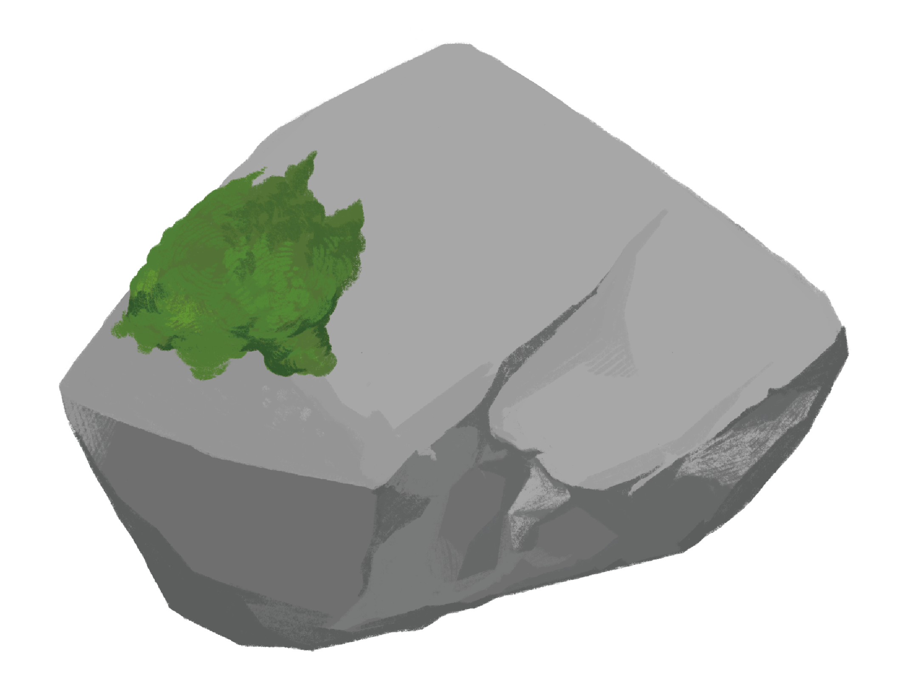

岩について

岩がつくる小さな生態環境
岩は、一見すると生き物とは関係のない存在に見えるかもしれません。
しかし、その表面や隙間、下にできる空間は、
さまざまな小さな生き物にとって重要なすみかとなります。
岩は倒木とは異なり、それ自体が生物の主な餌資源になるわけではありません。 その代わり、日光や風を遮り、水分の蒸発を抑えることで、 周囲とは異なる小さな生態環境をつくり出しています。
岩の表面に広がる生命
岩の表面は、日光や雨、風の影響を直接受ける環境です。
しかし、日陰や湿り気のある場所では蘚苔類が生育し、
小さな生き物たちの活動の場となります。
蘚苔類の周辺には、トビムシ類や陸産貝類、ナメクジ類などが見られます。 これらの生き物は、湿度や周囲の環境に応じて、 岩の表面や隙間を利用しています。
岩の下に隠された世界
岩の下は、日光が届きにくく、水分が蒸発しにくいため、
比較的暗く湿った環境が保たれやすい場所です。
また、外部の環境変化を受けにくく、
小さな生き物たちの隠れ場所にもなっています。
このような環境では、ワラジムシ類やヤスデ類、 ゴミムシ類、ムカデ類などが見られます。 落ち葉や有機物を利用する生き物だけでなく、 ほかの小動物を捕食する生き物も活動しています。
岩石の風化
岩石の風化
岩石は、一見すると変化しないように見えますが、
長い時間をかけて少しずつ姿を変えています。
このように、気温の変化や水、空気、生物の働きなどによって、
岩石がその場で砕けたり、含まれる鉱物が変化したりする現象を
「風化」といいます。
風化には、大きく分けて「物理的風化」と 「化学的風化」があります。 物理的風化は、岩石の主な化学組成を変えずに 亀裂や破砕を生じさせる作用です。 一方、化学的風化は、水や酸素などとの反応によって、 岩石を構成する鉱物が溶解・変質する作用です。
これらの作用は互いに影響し合いながら進み、 岩石の表面や内部に亀裂、凹凸、細かな粒子などを生み出します。 こうした変化は、水分や有機物がたまる場所をつくり、 小さな生き物が利用する環境にも関わっています。